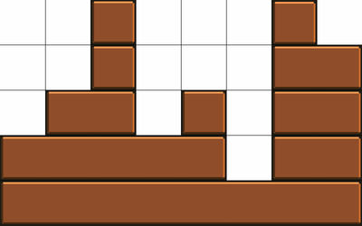

Project Euler 502
Project Euler 502
题目
Counting Castles
We define a block to be a rectangle with a height of \(1\) and an integer-valued length. Let a castle be a configuration of stacked blocks.
Given a game grid that is \(w\) units wide and \(h\) units tall, a castle is generated according to the following rules:
Blocks can be placed on top of other blocks as long as nothing sticks out past the edges or hangs out over open space.
All blocks are aligned/snapped to the grid.
Any two neighboring blocks on the same row have at least one unit of space between them.
The bottom row is occupied by a block of length \(w\).
The maximum achieved height of the entire castle is exactly \(h\).
The castle is made from an even number of blocks.
The following is a sample castle for \(w=8\) and \(h=5\):

Let \(F(w,h)\) represent the number of valid castles, given grid parameters \(w\) and \(h\).
For example, \(F(4,2) = 10, F(13,10) = 3729050610636, F(10,13) = 37959702514,\) and \(F(100,100) \bmod 1 000 000 007 = 841913936\).
Find \((F(10^{12},100) + F(10000,10000) + F(100,10^{12})) \bmod 1 000 000 007\).
解决方案
把宽度为 \(w\) 的城堡按列看，定义第 \(i\) 列高度为 \(H_i\)，并约定\(H_0=0,(1\le i\le w).\)由于底层必须整行覆盖，所以\(H_i\ge 1,(1\le i\le w).\)
反过来，任意满足 \(1\le H_i\le h\) 的高度序列都对应一个合法堆叠：第 \(r\) 层占据那些满足 \(H_i\ge r\) 的列，再按极大连续段合并成块。
- 连续段之间天然至少隔 1 格，满足规则 3。
- 若某格在第 \(r\) 层被占据，则同列第 \(r-1\) 层也被占据，满足“不悬空”。
因此，计数问题等价于对序列 \((H_1,\dots,H_w)\) 计数。
定义总块数为 \(B(H)\)。从左到右扫列高：当 \(H_i>H_{i-1}\) 时，恰有 \(H_i-H_{i-1}\) 个新块起点在第 \(i\) 列出现；当 \(H_i\le H_{i-1}\) 时，不会新增块起点。故\(\displaystyle B(H)=\sum_{i=1}^{w}\max(H_i-H_{i-1},0).\)题目要求块数为偶数，即\(B(H)\equiv 0\pmod 2.\)
记\(G(w,h)\)，其语义和\(F(w,h)\)基本相同，区别在于\(F(w,h)\)是计数恰好等于\(h\)的，而\(G(w,h)\)是计数不超过\(h\)的。则题目所求最大高度恰好为 \(h\)的计数为\(F(w,h)=G(w,h)-G(w,h-1).\)
所以核心是求 \(G\)。
固定高度上界 \(h\)。定义状态 \(f_i(x,p)\)：它表示前 \(i\) 列的合法构型数量，且满足当前列高为 \(H_i=x\)、块数奇偶为 \(B\bmod 2=p\)，其中 \(0\le x\le h,p\in\{0,1\}\)。初值：\(f_0(0,0)=1, f_0(x,p)=0(x,p)\ne(0,0).\)
转移：从上一列高度 \(y\) 到当前高度 \(x\)。新增块数为\(\Delta=\max(x-y,0).\)因此奇偶变化为 \(p\mapsto p\oplus(\Delta\bmod2)\)。即
\[ f_i(x,q)=\sum_{y=0}^{h} f_{i-1}\left(y,q\oplus(\max(x-y,0)\bmod2)\right). \]
最终
\[ G(w,h)=\sum_{x=1}^{h}f_w(x,0). \]
可见，朴素复杂度是 \(O(wh^2)\)，非常慢。
对固定 \(i\) 和目标高度 \(x\)，把来源 \(y\) 分两段：\(y>x\)：\(\Delta=0\)，奇偶不变；\(y\le x\)：\(\Delta=x-y\)，按奇偶翻转。于是
\[ f_i(x,p) =\sum_{y=x+1}^{h}f_{i-1}(y,p) +\sum_{y=0}^{x}f_{i-1}(y,p\oplus((x-y)\bmod2)). \]
定义后缀和\(\displaystyle S_p(t)=\sum_{y=t}^{h}f_{i-1}(y,p),\) 则第一项是 \(S_p(x+1)\)。
再定义交错前缀\(\displaystyle P_p(x)=\sum_{y=0}^{x}f_{i-1}(y,p\oplus((x-y)\bmod2)),\)第二项就是 \(P_p(x)\)。
关键是 \(P\) 可线性递推（\(x\ge 1\)）：\(P_0(x)=P_1(x-1)+f_{i-1}(x,0),P_1(x)=P_0(x-1)+f_{i-1}(x,1),\)边界取\(P_0(-1)=P_1(-1)=0.\)
这一步可以在\(O(wh)\)的时间内完成。
当 \(h\ll w\) 时，状态被编码为：\((x,p), x\in[0,100],p\in\{0,1\},\)共 \(2(h+1)=202\) 维。转移矩阵 \(T_h\) 固定，满足\(\mathbf v_w=\mathbf v_0T_h^w.\)其中 \(\mathbf v_0\) 只有 \((0,0)\) 分量为 1。
于是\(\displaystyle G(w,h)=\sum_{x=1}^{h}\mathbf v_w(x,0),\)可用矩阵快速幂\(O(h^3\log w)\)计算。再差分得\(F(w,h)=G(w,h)-G(w,h-1).\)
当 \(h\gg w\) 时，这里反过来固定宽度 \(w\)，把高度当自变量。
对固定宽度 \(w\)，定义\(\displaystyle E_w(h)=\#\{H:\max_{i=1}^w\{H_i\}\le h, B(H)\equiv0\pmod2\},O_w(h)=\#\{H:\max_{i=1}^w\{H_i\}\le h, B(H)\equiv1\pmod2\}\).
则有命题：四个序列\(E_w(2x),E_w(2x+1),O_w(2x),O_w(2x+1)\)都是关于 \(x\) 的多项式，次数不超过 \(w\)。
我们将完成这个命题的证明，大致的方法是对 \(w\) 做强归纳，并同时证明四个序列。
基础情形：当\(w=1\) 时，\(H=(h_1)\)，且\(B(H)=h_1.\)因此\(E_1(h)=\left\lfloor \dfrac h2\right\rfloor,O_1(h)=\left\lceil \dfrac h2\right\rceil.\)
于是\(E_1(2x)=x,E_1(2x+1)=x,O_1(2x)=x,O_1(2x+1)=x+1,\)均为次数 \(\le1\) 的多项式。
归纳假设：假设对所有 \(u<w\)，四个序列\(E_u(2x),E_u(2x+1),O_u(2x),O_u(2x+1)\)都是关于 \(x\) 的多项式，次数 \(\le u\)。
归纳步骤：先证 \(E_w(2x)\)；其余三种完全同理。
取任一宽度 \(w\)、高度上界 \(2x\) 的城堡。令\(\displaystyle t=\min_{1\le i\le w}\{H_i\}.\)这正是整宽砖（长度 \(w\)）出现的层数。去掉最底部这 \(t\) 层后，剩余高度上界变为 \(2x-t\)，并且至少有一列高度为 \(0\)（因为最小值已被减到 \(0\)）。
看去掉后第一层非零行（若存在）的占据形状：它由若干互不相邻的连续段组成，段宽记为\(u_1,\dots,u_k, u_j\ge1, u_1+\cdots+u_k\le w-1.\)（严格小于 \(w\)，因为至少有一列为 \(0\)。）
固定这种段宽模式（及其在一行中的放置方式；放置数是仅依赖 \(w,u_1,\dots,u_k\) 的常数），每一段上方是一个独立的子城堡，宽度分别为 \(u_j\)，高度上界为 \(2x-t\)。设第 \(j\) 段子城堡块数奇偶为 \(\eta_j\in{0,1}\)，则去掉后的总奇偶是\(\eta_1\oplus\cdots\oplus\eta_k.\)原城堡总奇偶再额外异或 \(t\bmod2\)（因为加回一层整宽砖会使块数加 \(1\)，共加 \(t\) 次）。
所以，对原总奇偶为偶情况的计数，在固定 \(t\) 与固定段宽模式下，可写成\(\displaystyle\sum_{\eta_1\oplus\cdots\oplus\eta_k=t\bmod2}\prod_{j=1}^{k} N_{u_j,\eta_j}(2x-t),\)其中\(N_{u,0}=E_u, N_{u,1}=O_u.\)现在分 \(t\) 奇偶：若 \(t=2r\)，则自变量是 \(2(x-r)\)；若 \(t=2r+1\)，则自变量是 \(2(x-r-1)+1\)。
由归纳假设，每个因子都是关于对应参数的多项式，次数至多 \(u_j\)；乘积次数至多\(u_1+\cdots+u_k\le w-1.\)再对满足异或约束的有限个 \(\eta\) 求和，仍是次数 \(\le w-1\) 的多项式。再乘上“该模式放置数”常数、并对有限个模式求和，仍是次数 \(\le w-1\) 的多项式。
最后，对所有可行 \(t\) 求和（等价于对 \(r\) 求和）。对一个次数 \(\le w-1\) 的多项式做前缀求和，得到次数至多加 \(1\)，即次数 \(\le w\)。故\(E_w(2x)\)是次数 \(\le w\) 的多项式。同理可得\(E_w(2x+1),O_w(2x),O_w(2x+1)\)也都是次数 \(\le w\) 的多项式。归纳完成。
因为\(F(w,h)=E_w(h)-E_w(h-1),\)所以对固定 \(w\)，\(F(w,2x)\) 与 \(F(w,2x+1)\) 也是关于 \(x\) 的多项式，次数不超过 \(w\)。因此分别用 \(w+1\) 个偶点与 \(w+1\) 个奇点即可唯一插值并外推到 \(h\)时，\(F(w,h)\)的值即可。
具体来说，用线性 DP 先算出\(F(w,1),F(w,2),\dots,F(w,2w+2).\) * 取奇数高度点\((0,F(w,1)),(1,F(w,3)),\dots,(w,F(w,2w+1))\)插值得到奇段多项式； * 取偶数高度点\((0,F(w,2)),(1,F(w,4)),\dots,(w,F(w,2w+2))\)插值得到偶段多项式。
因 \(h=10^{12}\) 为偶数，令\(x=\dfrac{h-2}{2},\)代入偶段多项式即可得结果。
代码
1 | import numpy as np |